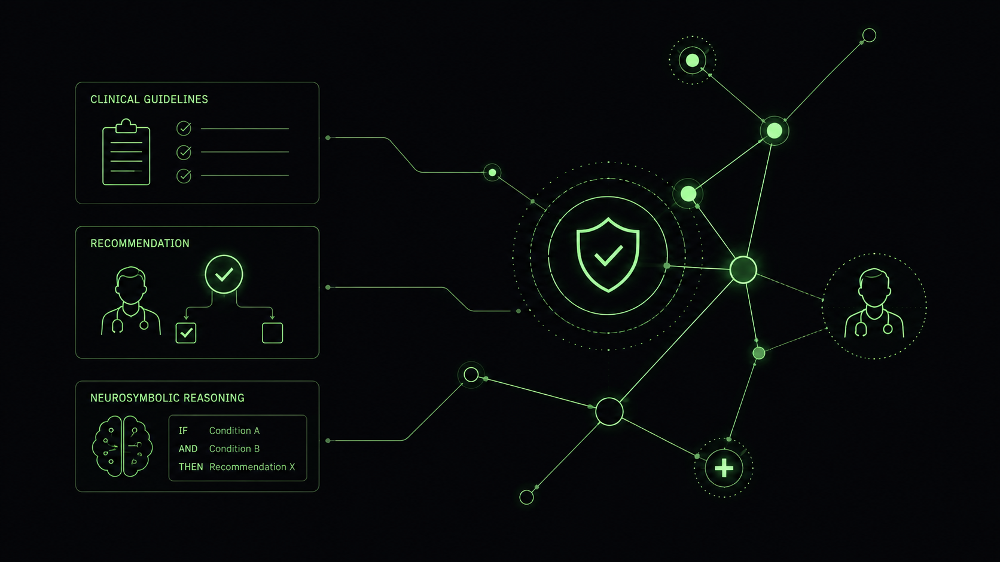

Building intelligent systems that make sense of complex worlds.
We work at the intersection of large language models, knowledge graphs, network science, and computational social science — building AI that reasons, explains, and operates across messy real-world domains.
Featured projects
All projects →Global Human Trafficking
Nine-year program mapping trafficking networks worldwide using AI-driven entity extraction and interpretable knowledge graphs. Funded by DARPA, AFRL, and DHS.
Learn more →
High-Assurance AI in Healthcare
Building reliable, interpretable AI systems for clinical decision support — combining causal reasoning, knowledge graphs, and rigorous validation for high-stakes medical settings.
Learn more →Computational Social Science
Using network science, large language models, and knowledge graphs to study complex social phenomena — from online behavior and misinformation to inequality and public health.
Learn more →Lab in action
Full gallery →